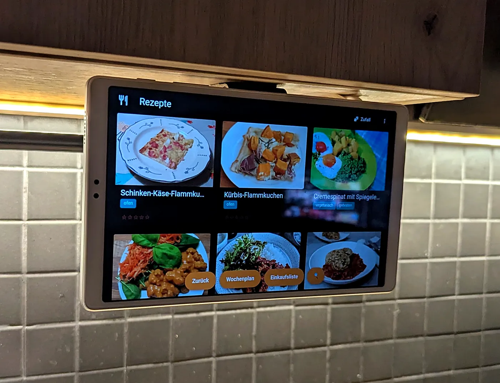
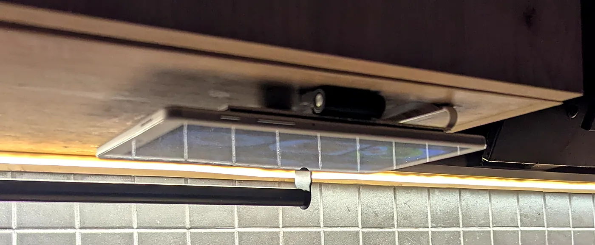
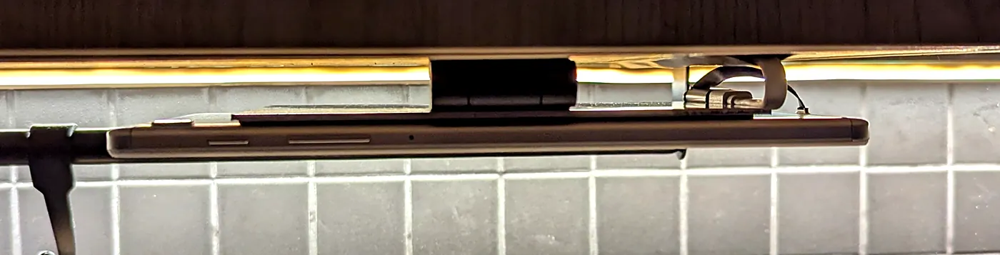
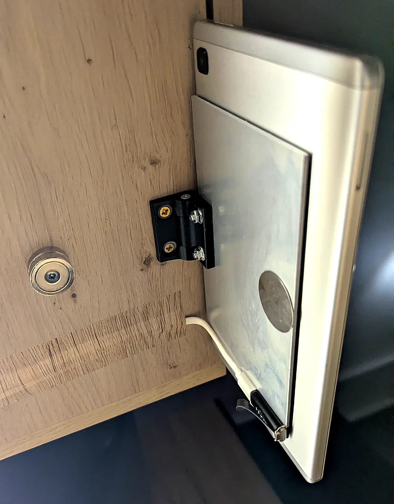
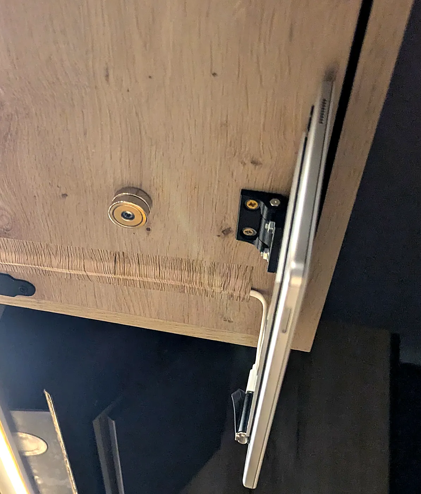

Bauanleitung
Klapphalterung für das Küchentablet
Ein Tablet hängt an einem Reibscharnier unter dem Hängeschrank. Zum Kochen klappt man es herunter, danach verschwindet es flach unter dem Schrankboden. Keine Bohrung ins Tablet, eine kleine Alu-Platte trägt die Last.

- Tablet
- Galaxy Tab A7 Lite (SM-T220), 366 g
- Scharnier
- Ganter GN 437, 40 mm, Reibung einstellbar
- Am Tablet
- nur geklebt, nichts gebohrt
- Strom
- dauerhaft per USB-C
So funktioniert es
- Auf die Rückseite des Tablets ist eine 2-mm-Alu-Platte geklebt. Das Scharnier ist an diese Platte geschraubt, nicht ans Tablet. So verteilt sich die Kraft beim Klappen auf fast die ganze Rückseite.
- Der zweite Flügel des Scharniers ist an den Schrankboden geschraubt. Die Reibung im Scharnier hält das Tablet in jeder Stellung.
- Hochgeklappt hält ein Topfmagnet im Schrankboden ein Stahlplättchen auf der Platte. Das Tablet liegt dann flach, das Display zeigt nach unten.
- Ein Flachkabel und eine USB-C-Kupplung bleiben fest am Tablet. Nur das Ladekabel bewegt sich in einer kurzen Schlaufe über die Achse.
- Eine eigene App merkt am Beschleunigungssensor, ob das Tablet hoch- oder heruntergeklappt ist, und schaltet das Display aus und ein. Details unten.


Teile
| Teil | Wofür | Menge |
|---|---|---|
| Ganter GN 437-ZD-40-40-A-SWReibscharnier, Zinkdruckguss, 40 × 40 mm | Drehachse | 1 |
| Alu-Platte 6061, 2 × 100 × 150 mmWinfox, zugeschnitten | Träger auf der Tablet-Rückseite | 1 |
| 3M VHB 5952F19 mm × 3 m, 1,1 mm dick | Platte und Kupplung ans Tablet kleben | 1 Rolle |
| Topfmagnet 25 mm mit Loch, mit StahlplättchenBFANGZ, 10er-Pack, selbstklebende Plättchen | Hält das Tablet hochgeklappt | 2 Magnete, 1 Plättchen |
| USB-C-Flachkabel, beidseitig 90°DAOKAI, 75 mm und 150 mm im Set | Tablet zur Kupplung | 1 (75 mm) |
| USB-C-Kupplung, Buchse auf BuchseTolesum, 27,5 × 15 × 8 mm, 2er-Pack | Übergang zum Ladekabel | 1 |
| Ladekabel USB-A auf USB-C, 2 mMOOOV 732060, weiß | Zur Steckdose | 1 |
| Kegelsenker HSS 10,4 mm, 90°AM-Zerspanungstechnik | Werkzeug: Senkung für die Schraubenköpfe | 1 |
Aus der Werkstattkiste
- 2 Senkkopfschrauben M3, etwa 16 mm
- 2 Unterlegscheiben M3, 2 Muttern M3 (selbstsichernd ist besser)
- 2 Holzschrauben für das Scharnier
- 1 Holzschraube für die Magnete
- USB-A-Netzteil
- Selbstklebende Möbelfolie im Dekor des Schranks
- Bohrmaschine, Metallbohrer 3,2 mm, Holzbohrer zum Vorbohren
- Innensechskant 2,5 mm, Schraubendreher, Isopropanol
Bauen
Vor dem Start: Erst die Platte mit Scharnier fertig verschrauben, dann ans Tablet kleben. Am Tablet selbst wird nicht gebohrt. Das VHB-Band braucht einen Tag, bevor es volle Last trägt.
-
Platte anzeichnen
Scharnier bündig an eine lange Kante der Platte legen, mittig. Durch die zwei Bohrungen des Flügels die Lochmitten anzeichnen. Diese Kante kommt später an die lange Tablet-Kante, um die das Tablet klappt.
-
Bohren und senken
Mit 3,2 mm durch die Platte bohren. Dann von der Seite, die aufs Tablet kommt, mit dem Kegelsenker senken, bis der Schraubenkopf bündig sitzt.
Prüfen: Mit dem Fingernagel über die Senkung fahren. Nichts darf hängen bleiben, sonst drückt der Kopf aufs Tablet.
-
Scharnier an die Platte schrauben
Senkkopfschrauben M3 von der Tablet-Seite durch Platte und Flügel stecken, oben Scheibe und Mutter. Fest anziehen: Die M3 hat in der Bohrung des Flügels Spiel, nur die Klemmung hält.
-
Platte aufs Tablet kleben
Tablet-Rückseite und Platte mit Isopropanol entfetten. VHB-Streifen nebeneinander auf die Platte, fast vollflächig. Platte bündig an die Klappkante setzen, zur USB-C-Seite verschoben, damit die Kamera frei bleibt. Fest andrücken.
Warten: laut 3M 50 % Haftung nach 20 Minuten, 90 % nach 24 Stunden. Erst am nächsten Tag montieren.

Fertig montiert, Rückseite: Platte, Scharnier, Stahlplättchen, Magnet und Kabel. -
Stahlplättchen aufkleben
Das selbstklebende Plättchen aus dem Magnet-Set auf die Platte kleben, nahe der Ecke gegenüber dem Scharnier. Dort hat der Magnet den längsten Hebel.
-
Kabel am Tablet
Das 75-mm-Flachkabel in die USB-C-Buchse stecken und flach zur Rückseite umlegen. Die Kupplung mit VHB im Streifen neben der Platte festkleben und das Flachkabel einstecken. Das Ladekabel kommt in die Kupplung. So wirkt kein Zug auf die Buchse des Tablets.
-
Scharnier an den Schrank schrauben
Tablet hochgeklappt unter den Schrank halten und ausrichten. Den freien Flügel nahe der Vorderkante an den Schrankboden halten, vorbohren und mit zwei Holzschrauben festschrauben.
-
Magnet setzen
Zwei Topfmagnete aufeinander stapeln und mit einer Holzschraube in den Schrankboden schrauben, genau über dem Stahlplättchen. Der Stapel gleicht die Höhe des Scharniers aus, so liegt das Tablet hochgeklappt gerade an.
Prüfen: Hochklappen. Das Plättchen rastet am Magnet ein und das Tablet bleibt oben.

Von unten: Magnetstapel im Schrankboden, Scharnier an der Vorderkante. -
Ladekabel verlegen
Das Ladekabel in einer kurzen Schlaufe über die Achse führen, dann unter dem Schrank entlang zur Wand. Mit Möbelfolie im Dekor des Schranks überkleben, so ist es kaum zu sehen. Am Ende das USB-A-Netzteil.
Prüfen: Hochgeklappt liegt das Kabel neben dem Tablet, nicht darunter.
-
Reibung einstellen
Die Stellschraube am Scharnier (Innensechskant 2,5 mm) weit lösen, dann in kleinen Schritten anziehen, bis das Tablet jede Stellung hält. Höchstens 0,5 N·m.
Prüfen: Das Tablet bleibt, wo man es hinstellt, und lässt sich mit leichtem Druck bewegen. Sinkt es ab: etwas fester. Geht es schwer: etwas lösen.
Getestet
- bestandenMagnet: Das Plättchen liegt hochgeklappt am Magnet an und hält das Tablet oben.
- bestandenKlappen: Mehr als 20-mal geklappt, das Laden bricht dabei nicht ab.
- bestandenLaden: Netzteil durchgehend erkannt, Akku in 29 Minuten von 30 % auf 42 %. Die ersten 12 Minuten mit Display an.
- bestandenDisplay: Hochgeklappt geht es nach etwa einer Sekunde aus und bleibt aus. Heruntergeklappt ist die Rezept-App sofort da.
Die App: Display aus beim Hochklappen
Das Tablet läuft als Kiosk mit einer eigenen Android-App. Sie ist der Startbildschirm und zeigt die Rezepte aus einer selbst gehosteten Mealie-Instanz. Der Code ist nicht veröffentlicht, darum hier die Funktionsweise zum Nachbauen.
Lage erkennen. Ein Vordergrund-Dienst liest den Beschleunigungssensor, auch bei ausgeschaltetem Display. Ein Partial Wake Lock hält dafür die CPU wach. Aus dem Schwerevektor rechnet er den Winkel zwischen Display und Boden aus: 0° heißt flach mit dem Display nach unten, 90° heißt senkrecht.
Mit Hysterese schalten. Ab 50° gilt das Tablet als heruntergeklappt, unter 40° als hochgeklappt. Der Winkel muss 400 ms stabil sein. So schaltet nichts beim Antippen oder beim Durchschwingen.
Ausschalten. Hochgeklappt ruft die App DevicePolicyManager.lockNow() auf. Dafür ist sie Geräteadministrator, aber nur mit dem Recht force-lock.
Einschalten. Heruntergeklappt holt ein kurzer Wake Lock (FULL_WAKE_LOCK mit ACQUIRE_CAUSES_WAKEUP, 3 s) das Display zurück. Danach startet die App ihre Activity neu. Die Activity darf über dem Sperrbildschirm liegen (setShowWhenLocked) und hält das Display an, solange sie sichtbar ist.
Falle: Die Activity darf nicht zusätzlich setTurnScreenOn(true) setzen. Jeder Neustart der Activity schärft dieses Flag neu. Beim nächsten lockNow() erscheint der Sperrbildschirm, die Activity wird darüber wieder sichtbar und schaltet das Display nach 14 ms wieder ein. Gemessen auf diesem Tablet.
Einrichtung per adb
adb shell cmd role add-role-holder android.app.role.HOME <paket> 0 adb shell dpm set-active-admin <paket>/.LockAdmin adb shell settings put global stay_on_while_plugged_in 0 adb shell dumpsys deviceidle whitelist +<paket> adb shell pm grant <paket> android.permission.POST_NOTIFICATIONS adb shell appops set <paket> SYSTEM_ALERT_WINDOW allow
- Startbildschirm
- Die App startet nach jedem Neustart selbst und bringt den Sensor-Dienst mit.
- Geräteadmin
- Nötig für
lockNow(). Ohne ihn bleibt das Display einfach an. - stay_on_while_plugged_in
- Muss 0 sein. Sonst hält das dauerhaft steckende Ladekabel das Display an.
- Akku-Ausnahme
- Damit Android den Dienst nicht schlafen legt.
- Benachrichtigungen
- Samsung bricht das Aufwecken ab, wenn die App keine Benachrichtigungen senden darf.
- Overlay-Recht
- Ohne es blockiert Android den Activity-Start aus dem Dienst. Das Display leuchtet dann 3 s und geht wieder aus.
Dauerstrom ist unkritisch, weil Samsungs Akkuschutz das Laden bei 80 % stoppt.
Technischer Anhang
- Scharnier GN 437, 40 mm, mittig an der Klappkante. Lochabstand 25 mm.
- Alu-Platte 100 × 150 × 2 mm, bündig an der Klappkante.
- Stahlplättchen für den Magnetstapel.
- Flachkabel 75 mm aus der USB-C-Buchse.
- USB-C-Kupplung, mit VHB geklebt.
- Ladekabel 2 m, Schlaufe über die Achse.
- Kamera bleibt frei.
- Haltemoment
- etwa 0,22 N·m (366 g, Schwerpunkt etwa 62 mm von der Achse), gerechnet
- Scharnierreibung
- bis etwa 2 N·m, also reichlich Reserve. Darum fein einstellen.
- Warum bündig
- Die Scharnierbohrungen liegen 12,5 mm von der Achse. Bündig an der Kante liegen sie etwa 11 mm tief in der Platte, genug Material um die 3,2-mm-Löcher.
- Warum M3
- Ein M3-Senkkopf ist 1,7 mm hoch und passt in 2 mm Blech. M5 bräuchte 3 mm, sonst bleibt nur eine Messerkante.
- Warum eine Platte
- Ein direkt aufs Tablet geklebter Flügel würde bei jedem Klappen an seiner Vorderkante abgeschält. Die Platte verteilt die Last auf fast die ganze Rückseite.